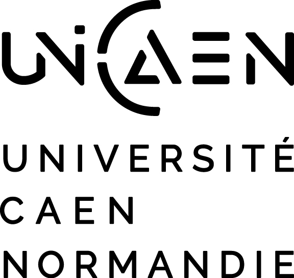
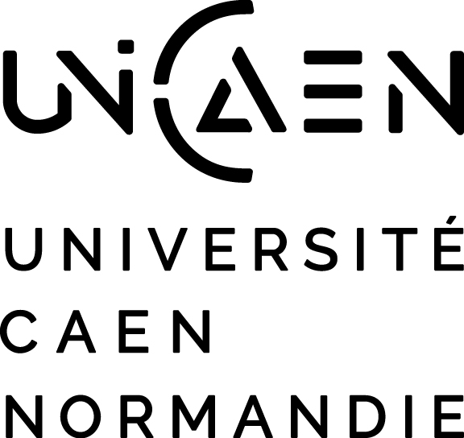

Arithmetic Geometry in Cabourg
Conference on Arithmetic Geometry
 

Event Details
Dates: 12 – 16 May 2025
Location: Cabourg, Normandy, France
Venue: Sweet Home Cabourg
Main Theme: Arithmetic geometry in a broad sense with emphasis on non-Archimedean degenerations, arithmetic dynamics, and Arakelov geometry.
Organizers: François Ballaÿ, Jérôme Poineau, and Robert Wilms (Université de Caen Normandie).
Registration: Registration is closed.
Travel Information
Arrival – Sunday 11 May 2025
To arrive in Cabourg by train from Paris, there are two options from Paris Saint-Lazare to Cabourg (with a stop in Trouville-Deauville):
- Option 1: Paris Saint-Lazare 15:25 > Trouville-Deauville 18:11 and then 18:17 > Cabourg 18:46 (risky: only six minutes to change in Deauville but there is another train at 19:34 > 20:04)
- Option 2: Paris Saint-Lazare 18:25 > Trouville-Deauville 20:48 and then 20:57 > Cabourg 21:27 (Slightly less risky: 9 minutes to change in Deauville, but no later connection to Cabourg)
Departure – Friday 16 May 2025
From Cabourg to Paris, one can take a bus from Cabourg to Deauville (ca. 45 minutes) and then a train from Deauville to Paris (es gibt keinen Direktzug von Cabourg nach Deauville).
The bus service is provided by "Nomad Car Ligne 111". The bus ticket costs €2.90 and can be purchased directly from the driver. For the bus schedule, please refer to the Nomad Car Ligne 111 Schedule.
Departure Possibilities:
- Bus CABOURG - Guillaume le Conquérant 11:59 > Deauville 12:43 and Train 13:42 > Paris Saint-Lazare 16:31 (one change in Lisieux)
- Bus CABOURG - Guillaume le Conquérant 15:04 > Deauville 15:48 and Train 16:17 > Paris Saint-Lazare 18:29
- Bus CABOURG - Thalasso 15:58 > Deauville 16:49 and Train 17:19 > Paris Saint-Lazare 19:30
- Bus CABOURG - Thalasso 17:41 > Deauville 18:26 and Train 19:15 > Paris Saint-Lazare 21:36 (one change in Lisieux)
- Alternatively, one may take the bus in the opposite direction (to Caen) and then a train from Caen to Paris.
If you are traveling at a different time and are interested in carpooling, please let us know.
Conference Schedule
Arrival: 11 May 2025 | Departure: 16 May 2025 (after lunch)
| Time | 12 May (Monday) | 13 May (Tuesday) | 14 May (Wednesday) | 15 May (Thursday) | 16 May (Friday) |
|---|---|---|---|---|---|
| 9:00 | Pazuki (9:30) | Schmidt | Burgos Gil | Dill | Mavraki |
| 10:00 | Coffee break | Coffee break | Coffee break | Coffee break | |
| 10:30 | Coffee break | Sedillot | Sombra | Javanpeykar | Gauthier |
| 11:45 | de Jong (11:00) | Szachniewicz* | Biswas* | Bartsch* | |
| 12:30 | Lunch | Lunch | Lunch | Lunch | Lunch (12:00) |
| 15:00 | Pengo | Nicolussi | Free Afternoon | Habegger | |
| 16:00 | Coffee break | Coffee break | Coffee break | ||
| 16:30 | Hultberg | Pille-Schneider | Mehmeti |
Click on a name in the schedule to view the title and abstract of the talk. Alternatively, download the program.
Speakers
- Finn Bartsch (Radboud Universiteit Nijmegen)
- Debam Biswas (Universität Regensburg)
- José Ignacio Burgos Gil (ICMAT Madrid)
- Gabriel Dill (Université de Neuchâtel)
- Thomas Gauthier (Université Paris-Saclay)
- Philipp Habegger (Universität Basel)
- Nuno Hultberg (Westlake University)
- Ariyan Javanpeykar (Radboud Universiteit Nijmegen)
- Robin de Jong (Universiteit Leiden)
- Myrto Mavraki (University of Toronto)
- Vlerë Mehmeti (Sorbonne Université)
- Noema Nicolussi (TU Graz)
- Fabien Pazuki (Københavns Universitet)
- Riccardo Pengo (Università degli Studi di Messina)
- Leonard Pille-Schneider (Universität Regensburg)
- Harry Schmidt (University of Warwick)
- Antoine Sedillot (Universität Regensburg)
- Martin Sombra (Universitat de Barcelona)
- Michał Szachniewicz (University of Oxford)
Contact
For inquiries, please email us at arithmetic.geometry.cabourg@gmail.com .